چطور تنها با کمک Vanilla JavaScript یک نرم افزار CRUD بسازیم؟
در این مقاله خواهیم آموخت که چطور میتوان یک نرم افزار CRUD را با Vanilla JavaScript کد نویسی کرد. منظور از Vanilla JavaScript کد نویسی زبان جاوا اسکریپت بدون framework است. کد نویسی مستقیم و خالص در JS. تمام مراحل ساخت این نرم افزار از ساخت tagهای html و استایل آنها با CSS، تا ذخیرهی دادهها در localStorage در این مقاله عنوان شده است.
CRUD چیست؟
حتما با نرم افزارهای یادداشت گوشی هوشمندتان سر کار داشتهاید. نرم افزارهای سادهای مثل to-do list که معمولا برای برنامه ریزی و یادداشتهای روزانه از آنها استفاده میشود. نام CRUD برگرفته از حروف اول عبارات Create, Read, Update, Delete است. CRUD نرم افزاری است که به کمک آن میتوانیم یک یادداشت را ایجاد، ذخیره، ادیت و حذف کنیم.
1. ساخت اسکلت با HTML
برای ساخت مارک آپ، دو element اصلی وجود دارد: محفظهی new-note که نگه دارندهای برای ورودی محتوا برای یادداشت ماست، و notes-wrapper که محفظهای برای یادداشتها بعد از فرآیند ذخیره سازیست. در کنار این موارد، یک div برای form-error و یک button که فانکشن ( )addNote را فراخوانی میکند نیز در صفحه به نمایش در خواهد آمد.
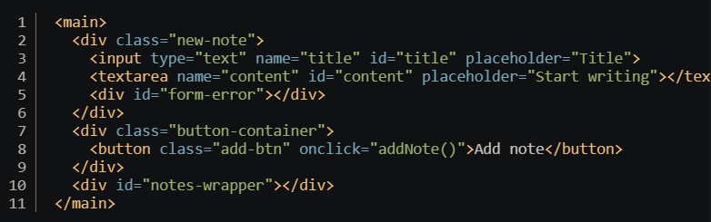2. فرآیند Styling صفحه
تصویر زیر مربوط به استایلینگ نرم افزار است. از آنجا که تمرکز این مطلب بر عملکرد و کد نویسی JavaScript است، به نمایش کلی فایل CSS بسنده کردیم و از توضیح هر عبارت و عملکرد آن خود داری شد.
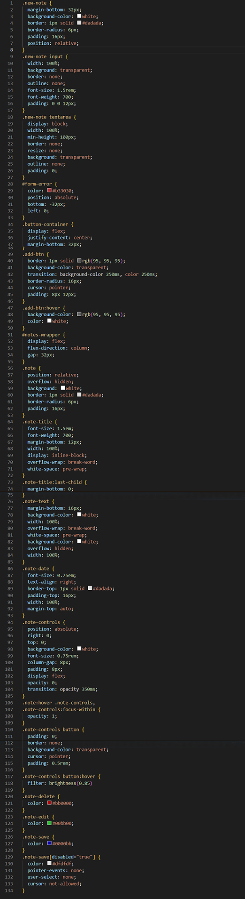تصویر زیر نشان دهندهی شمایل نهایی، بعد از اعمال تمام کدهای CSS است.
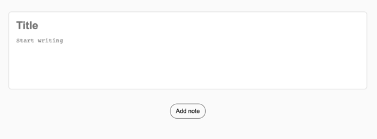3. ساختن و خواندن دادهها
حال نوبت کاربردی کردن المانهای تعریف و زیبا سازی شدهی نرم افزار CRUD آنلاین ماست.
Global Element
لازم است elementهایی را به شکل گلوبال (که داخل و خارج تمام اسکوپها در دسترس هستند) در اولین سطرهای فایل جاوا اسکریپت تعریف کنیم.
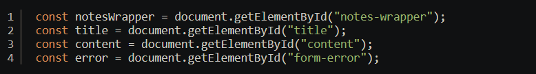سپس یک متغیر گلوبال با کلمهی کلیدی let برای ذخیرهی دادههایمان میسازیم. علت استفاده از let برای این مورد، متغیر بودن noteData میباشد. کلمهی کلیدی let این امکان را به ما میدهد که هر بار قادر به تغییر مقادیر داخل متغیر باشیم.
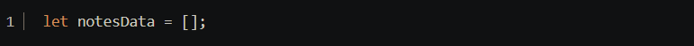ایجاد و ذخیرهی دادهها
به منظور ایجاد دیتای مورد نظر، نیاز به یک فانکشن با نام ( )addNote وجود دارد که با کلیک بر روی دکمه فراخوانی شده و دیتای ما را ایجاد و ذخیره کند. این فانکشن در اصل وظیفهی دریافت دادههای ورودی و تغییر آن به فرمت "خواندن" را به عهده دارد. از ایجاد یک شرط برای فانکشن شروع میکنیم. با نوشتن کد زیر، در صورتی که هر دوی inputهای title و content خالی باشد، کاربر با یک پیام خطا مواجه میشود.
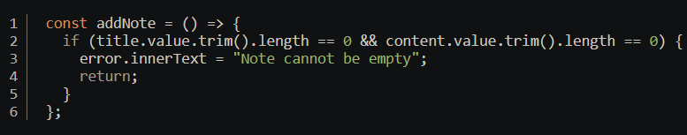
سپس باید یک object برای نگه داری زمان یادداشت جدید بسازیم. اینجا ما
برای هر یادداشت، یک مقدار uid منحصر به فرد ایجاد میکنیم. این کار
خیلی ساده با متد ( )date.getTime امکان پذیر میشود. مقدار uid ساخته
شده با این متد به عدد میلی ثانیهی ایجاد یادداشت ذخیره میشود. ایجاد
یک uid یونیک امکان تداخل بین یادداشتها را از بین میبرد. بدین ترتیب
حتی یادداشتهای با تایتل و محتوای همسان هم با uid منحصر به فرد از
یکدیگر متمایز میشوند. همین امر تداخل بین یادداشتها را از بین
میبرد.
در ادامه از متد ( )date.toLocalDateString برای ذخیره و نمایش زمان
ایجاد یادداشت استفاده میکنیم. Object ما در نهایت به شکل زیر کد
نویسی میشود.
بعد از ساخته شدن آبجکت، میتوانیم آن را در notesData به شکل یک array و همچنین در localStorage مرورگر ذخیره کنیم.
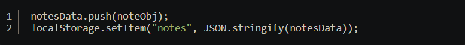نکتهی مهم اینجاست که localSorage فقط از دادههای با فرمت string پشتیبانی میکند. در نتیجه باید از متد ( )JASON.stringify استفاده کنیم.
نمایش دادهها
نوبت آن رسیده که یک function با نام ( )createNote برای ضمیمه کردن یادداشت جدید در کانتینر یا نگه درندهی noteWrapper ایجاد کنیم. خروجی نهایی حاوی تایتل، محتوا و تاریخ ایجاد یادداشت خواهد بود. همچنین آپشنهای edit، save و delete به شکل دکمههایی قابل کلیک کردن در کنار یادداشت ذخیره شده به نمایش در خواهند آمد که هر کدام function مورد نظر را با توجه به id یونیک آن یادداشت فراخوانی خواهند کرد.
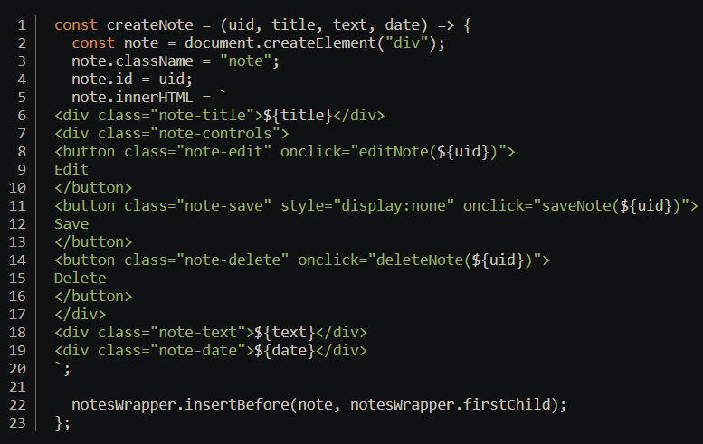در این function، ما از متد ( )insertBefore برای اینکه مطمئن شویم جدیدترین یادداشت بالای یادداشتهای دیگر قرار میگیرد استفاده میکنیم.
ریست شدن عنوان و متن در قاب ورودی یادداشت
در نهایت، ( )addNote باید قادر باشد بعد از ایجاد یادداشت جدید، تمام محتوای عنوان، متن و خطا را به حالت اولیه باز گرداند تا نرم افزار برای ایجاد یادداشت جدید آماده شود.
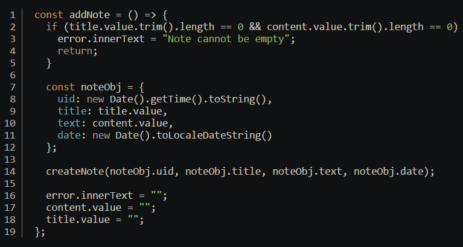چک کردن وجود دادهها
از آنجایی که ما از localStorage استفاده میکنیم، میتوانیم شرطی را برای چک کردن وجود دادهها در localStorage در نظر بگیریم و پس از بارگیری صفحه، آن را نمایش دهیم. در اینجا از متد ( )JASON.parse برای برگرداندن دادههای استرینگ شده، به فرمت اصلی خود استفاده میشود.
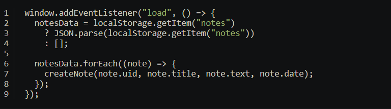4. بروزرسانی یادداشتها
تا به اینجای کار ما دو قسمت اساسی “C” و “R” را در نرم افزار CRUD کد نویسی کردیم. یعنی نرم افزار ما قادر به ایجاد (Create) و خواندن (Read) شده است، و میتواند با موفقیت یک یادداشت را بنا به محتوای ورودی کاربر ایجاد کرده و آن را ذخیره سازی و نمایش دهد. پس نوبت آن رسیده که بر روی حرف “U” که حراف اول عبارت Update بوده و به معنای ادیت یادداشت است کار کنیم.
Edit
اگر توجه کرده باشید، برای function اصلی که ( )creatNote نام گذاری شد، دو دکمه برای ادیت و ذخیره کردن دادهها ایجاد شده بود. به کمک این دکمهها میتوانیم functionهای ( )editNote و ( )saveNote را فراخوانی کنیم. زمانی که دکمهی ادیت کلیک میشود، خود دکمهی ادیت پنهان شده و به جای آن دکمهی save نمایش داده میشود. تمام این موارد در کد زیر آمده است:
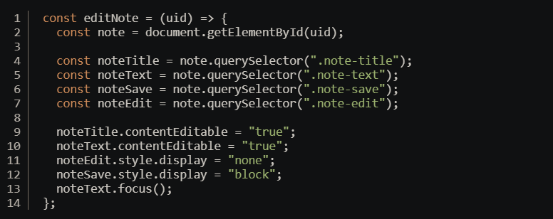در این function ما از uid برای کار با DOM استفاده میکنیم. سپس elmentهای title و text را در DOM تارگت میکنیم و از متد contentEditabel برای قابل تغییر شدن محتوا استفاده میکنیم. این متد یک attribute پیشفرض برای مرورگر است که با ست شدن آن به حالت true به کاربر امکان تغییر محتوای element را میدهد.
همچنین میتوانیم کد CSS را در زمان ادیت کردن یادداشت تغییر دهیم:
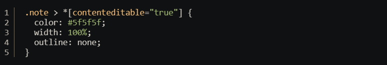ذخیره سازی مجدد یادداشت ادیت شده
برای فانکشن ( )saveNot نیاز خواهیم داشت که مقادیر notesData را که در localStorage ذخیره شده تغییر دهیم. میتوانیم از متد ( )forEach برای پیدا کردن uid مورد نظر و بروزرسانی محتوا استفاده کنیم. سپس array تغییر یافته را به جای مقادیر قبلی در localStorage جایگزین میکنیم.
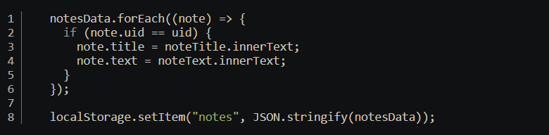مرحلهی بعدی استفاده از همان منطق فانکشنِ ( )editNote است، اما اینبار اتریبیوتِ contentEditabel باید در حالت false قرار بگیرد و دکمهی save پنهان شود. کمهی edit دوباره به جای اول خود باز خواهد گشت.
در اینجا هم دوباره مانند فانکشن ( )addNote باید شرطی قرار دهیم که کاربر قادر به ایجاد یک یادداشت بدون عنوان و محتوا نباشد و در صورت خالی بودن تایتل و متن با خطا روبرو شود.
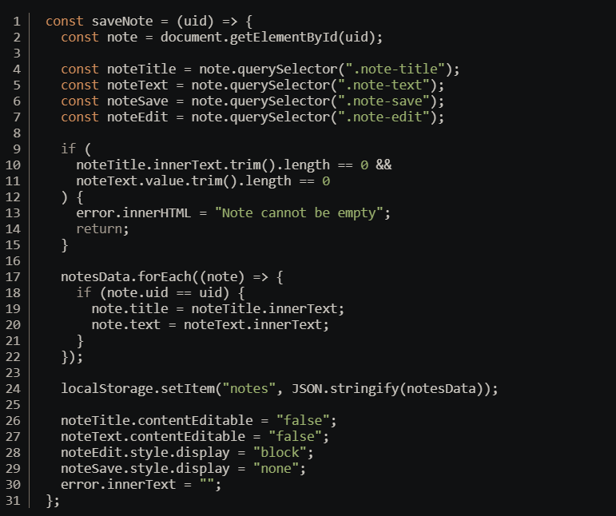5. پاک کردن دادهها
در نهایت میرسیم به حرف “D” در عبارت CRUD که به معنای delete و حذف دادههای مورد نظر است.
آخرین خطوط کدی که برای نرم افزار تحت وب ما باید اضافه شود مربوط به حذف دادههاست. برای این فانکشن باید کاری کنیم که المنتِ note از DOM حذف شده و همچنین آبجکتِ note نیز به کلی از notesData پاک شود. این کار با کمک متد ( )filter که قادر به حذف یک object از array است میسر میشود.
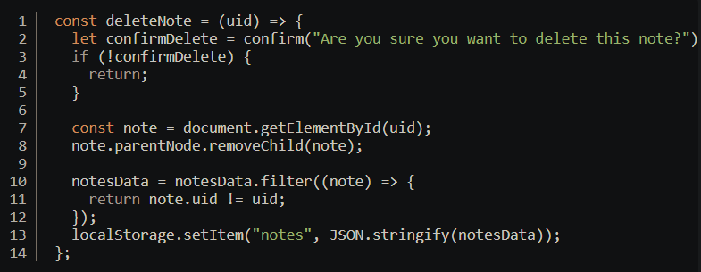یکی از مزایای ساختن یک نرم افزار تحت وب امکان استفاده از قابلیتهای پیش فرض مرورگر است. این فانکشن از متد ( )confirm برای نمایش یک model پیش فرض که قادر به تایید دادههای ورودی کاربر است استفاده میکند. این امر بدون نیاز به ساخت یک model به دست برنامه نویس انجام میشود.
نتیجه گیری
نرم افزاری که در طی این مقاله کد نویسی آن گفته شد، به اندازهای پیچیده بود که چالش برانگیز باشد. اما نه آنقدر پیچیده که نتوانیم مراحل و اجزای آن را به خوبی درک کنیم. نرم افزار نهایی ما با vanilla JS به عنوان یک CRUD آنلاین، بی نقص عمل خواهد کرد.